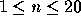

Jill Bates hates climbing hills. Jill rides a bicycle everywhere she goes, but
she always wants to go the easiest and shortest way possible. The good news is
that she lives in Greenhills, which has all its roads laid out in a strictly
rectangular grid - east-west roads are streets; north-south roads
are avenues
and the distance between any two adjacent grid points is the same. The bad
news is that Greenhills is very hilly and has many one-way roads.
In choosing a route between where she starts and where she ends, Jill has
three rules:
- Avoid any travel of more than 10 meters between adjacent grid points.
- Never go the wrong way on a one-way road.
- Always travel the shortest possible route.
Your program should help Jill find an acceptable route.
The input file contains less than 50 data sets in the following form:
- The first line of each set contains two integers, separated by one or more spaces.
The first integer n represents the number of streets, and the second integer
m represents the number of avenues,  ,
 .
. - The next n lines contain the altitudes of grid points. Each line
represents a street and contains a sequence of m integers separated by one
or more spaces. These integers represent the altitude in meters of the grid
points along that street. Even if a particular street and avenue have no
intersection, the altitude is still given for that grid point.
- One or more lines follow that define the one-way roads. Each road is
represented by two pairs of integers, separated by one or more spaces, in
the form:
street avenue street avenue
The first street and avenue define the starting point of the road and
the second pair define the ending point. Since Greenhills is a strict grid,
if the two points are not adjacent in the grid, the road passes through all
the intervening grid points. For example,
5 7 5 10
represents roads 5-7 to 5-8, 5-8 to 5-9, and 5-9 to 5-10. Road
definitions are terminated by a line containing four zeroes in the above
format.
- Finally, one or more lines will follow that contain pairs of grid points
between which Jill wants to find an optimal path, in the form:
street avenue street avenue
As before, the integer pairs are separated by one or more spaces. The end
of the input set is defined by a line containing four zeroes, formatted as
before.
You may assume that all street and avenue numbers are within the bounds
defined by the first line of set, and that all road definitions are strictly
north-south or east-west.
The end of input file is defined by EOF.
For each path query in the input file, output a sequence of grid points, from
the starting grid point to the ending grid point, which meets Jill's three
rules. Output grid points as `street-avenue' separated by the
word `to'. If
there is more than one path that meets Jill's criteria, any such path will be
acceptable. If no route satisfies all the criteria, or if the starting and
ending grid points are the same, output an appropriate message to that effect.
Output a blank line between each output for query.
3 4
10 15 20 25
19 30 35 30
10 19 26 20
1 1 1 4
2 1 2 4
3 4 3 3
3 3 1 3
1 4 3 4
2 4 2 1
1 1 2 1
0 0 0 0
1 1 2 2
2 3 2 3
2 2 1 1
0 0 0 0

1-1 to 1-2 to 1-3 to 1-4 to 2-4 to 2-3 to 2-2
To get from 2-3 to 2-3, stay put!
There is no acceptable route from 2-2 to 1-1.